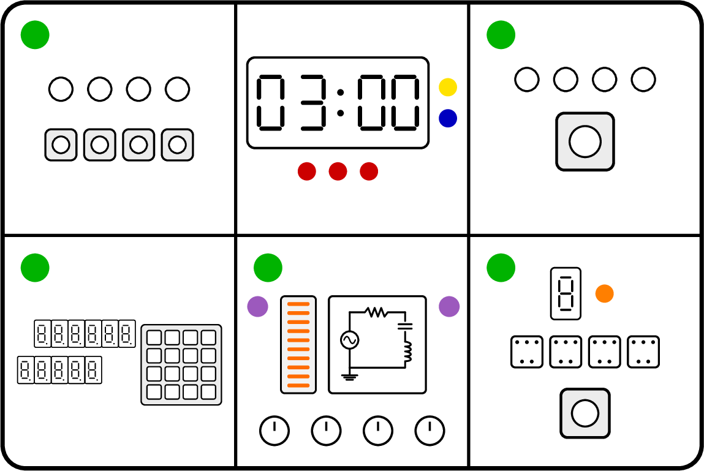

SERIAL NO.
BM-8086-TW
Project BOOM
KEEP TALKING AND DEFUSE THE BOMB
⚠ 警告：差之毫釐，謬以千里 ⚠
💥
立即啟動炸彈任務 (快速開局)
⚙
自訂任務配置 (SETUP)
📖
查閱拆彈手冊 (MANUAL)
任務配置面板 (CONFIG)
［ 啟動模組 ］
【四色按鈕】(Four-Color)
【格雷 / 凱撒密碼】(Cipher)
【三角翻譯】(Trislator)
【頻率調變】(Resonance)
【資料排序】(Data Sorting)
［ 遊戲模式 (MODE) ］
單人模式（畫面右上角可隨時展開拆彈手冊）
雙人模式（拆彈者僅能看炸彈，由另一人持 main.pdf 手冊語音溝通）
［ 倒數計時器 ］
01:00 (1 分鐘極限挑戰)
03:00 (3 分鐘緊湊)
05:00 (5 分鐘標準)
10:00 (10 分鐘充裕)
［ 失誤上限 (STRIKES) ］
1 次失誤即爆炸 (死鬥)
2 次失誤
3 次失誤 (手冊標準規則)
5 次失誤 (練習)
← 返回主選單
💥 武裝並啟動炸彈！
ORDNANCE: PROJECT BOOM (115學年度)
📖 拆彈手冊 (MANUAL)
✕ 放棄任務
🔍 點擊任一模組即可
放大到畫面中間
開始操作！右上角將隨時顯示剩餘時間與特殊指示燈。

🔍 點擊操作
05:00
🔍 點擊操作
🔍 點擊操作
🔍 點擊操作
🔍 點擊操作
←
返回炸彈全貌 (ESC)
模組操作
PROJECT BOOM 拆彈操作手冊 (手冊第 1~12 頁精華)
✕ 關閉手冊
💥
孩子，你炸了！
失誤累積達 3 次，炸彈已被引爆。
🔄 再挑戰一次
🏠 返回主選單